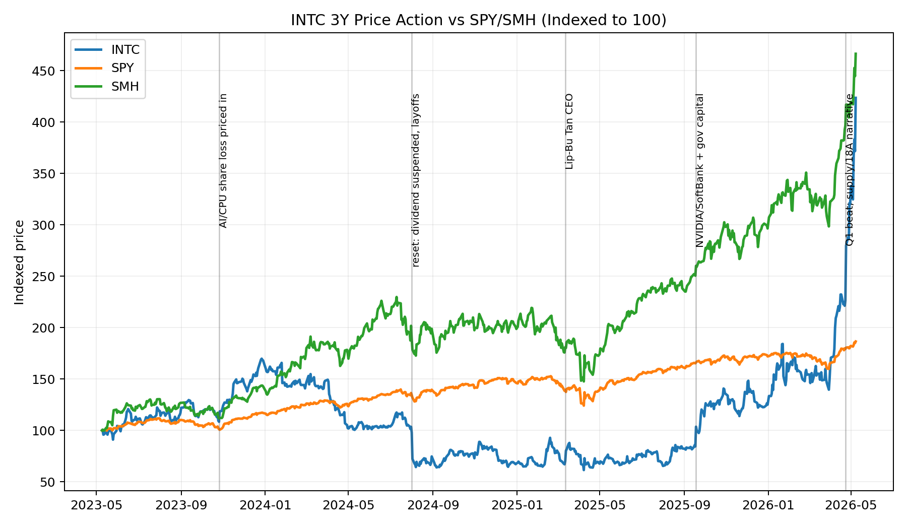
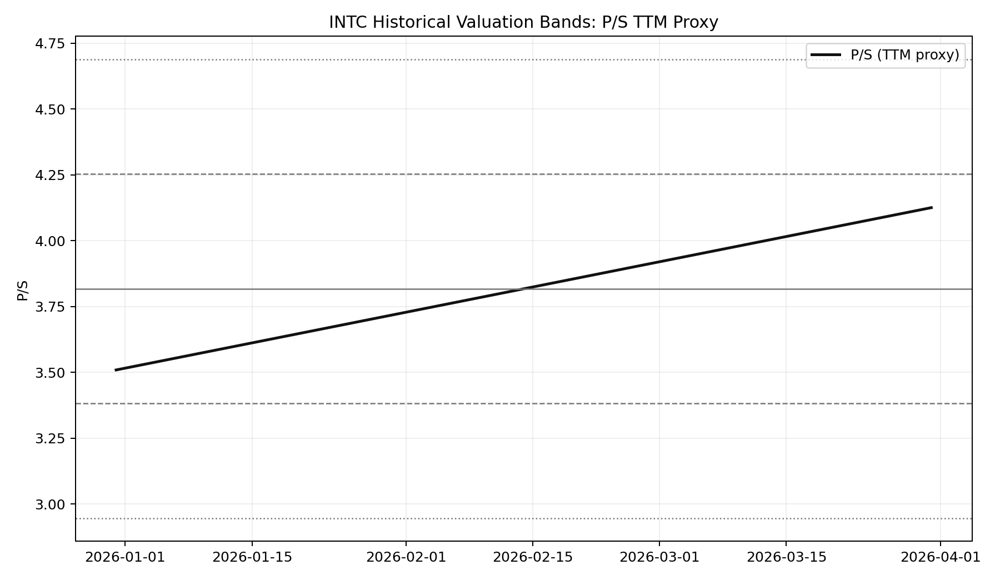
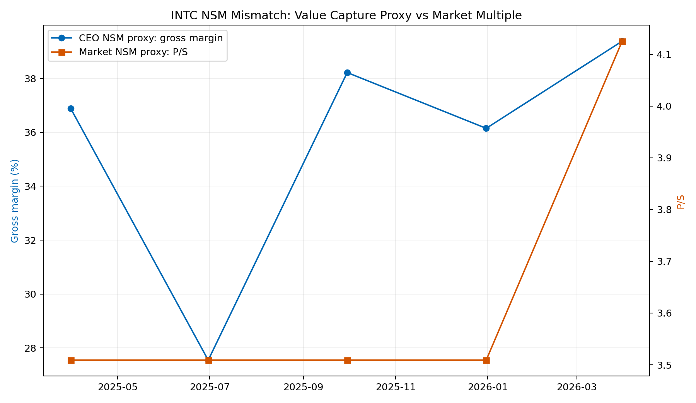

Ticker: INTC
Date: 2026-05-09
Classification: Watchlist / Not next-stage yet
结论：Intel 已经从“濒临失控的 IDM 衰退故事”切换成“CPU 供给紧张、18A 良率改善、14A 外部客户期权、美国本土先进制造溢价”的复合叙事，但当前价格已经提前兑现了相当多的成功。截至 2026-05-08，INTC 报 124.92 美元，过去一年涨约 495%，已经高于多数近期公开目标价区间。若只问“是否值得进一步研究”，答案是：需要持续跟踪，但不建议现在作为优先深研标的推进，除非 PM 的研究目标是验证一个明确的反身性泡沫或做空窗口。
真正的错锚假设是：市场过去用“PC/服务器份额流失 + foundry 烧钱”给 Intel 定价，而现在可能需要用“CPU 在 agentic/inference AI 栈中重新成为控制平面 + 先进封装/美国制造稀缺资产”定价。问题在于，这个错锚可能已经被市场快速修正，甚至转向另一个叙事陷阱：市场在奖励 14A 客户传闻和供给紧张，而长期投资者真正需要的是外部客户承诺、foundry 毛利修复和正自由现金流。
| Item | Latest Situation |
|---|---|
| Market Data & Positioning | INTC 最新价 124.92 美元，52 周区间 18.97-130.57 美元；按约 50.26 亿股估算市值约 6,280 亿美元。股价显著高于 50 日均线 62.11 美元和 200 日均线 42.34 美元，交易已经进入强动量而非便宜资产状态。 |
| Key Financial Metrics | 2026Q1 收入 135.77 亿美元，同比增长 7%；GAAP 毛利率 39.4%，non-GAAP 毛利率 41.0%；GAAP EPS -0.73 美元，non-GAAP EPS 0.29 美元。Q2 指引收入 138-148 亿美元，non-GAAP EPS 0.20 美元。 |
| Price Action & Technicals | 30 日技术层极端强势：RSI 约 85，MACD 柱继续扩大，收盘价远高于 EMA50。信号含义不是“低风险买点”，而是市场已经在强烈重估 Intel 的 AI CPU/18A/14A 叙事。 |
| Positioning | 公司员工数从 2025Q1 的 102.6k 降至 2026Q1 的 83.2k，重组仍在推进。Q1 现金及短投 327.9 亿美元，总债务 450.3 亿美元；完成爱尔兰 Fab 34 JV 49% 权益回购后资本结构更集中但债务负担仍高。 |
| Key Metric | Value | Implication |
|---|---|---|
| DCAI revenue | $5.1B, +22% YoY | 最强的基本面信号：AI 推理、agentic workload 和 CPU/GPU 配比变化正在重新拉动 Xeon 需求。 |
| Intel Foundry | $5.4B revenue, -$2.4B op loss | 收入受内部 EUV/18A 拉动，但外部 foundry 收入仅 1.74 亿美元；商业化仍远未证明。 |
| Adjusted FCF | Q1 -$2.0B | 管理层仍称全年可正，但资本开支和 14A 投资意味着“价值捕获”尚未兑现。 |
| Employee count | 83.2k vs 102.6k YoY | 文化/成本重置是真实的，但短期 GAAP 仍被重组费用压制。 |
Pricing Anchor & Embedded Expectations:市场现在不再用传统半导体低倍数框架看 Intel，而是在用“供给紧张下的 P/S 重估 + 远期 foundry/14A call option”定价。FMP TTM 指标显示 INTC P/S 已到 11.7x、P/B 5.7x、EV/EBITDA 57.5x，而 TTM 净利率仍为负。最近 FMP 价格目标 feed 中，4 月底至 5 月初多家机构上调目标价，但大多在 60-118 美元，低于 124.92 美元现价。
Peer Benchmarking:Intel 估值已靠近高增长半导体同行，但利润质量仍明显落后于 TSM、NVDA 和 MU。市场不是在付当期盈利倍数，而是在预付 2027-2030 年经营杠杆、14A 外部客户和美国本土先进制造稀缺性。
| Company | Market Cap | P/S | EV/EBITDA | Revenue Growth | Margin / FCF |
|---|---|---|---|---|---|
| INTC | ~$628B | 11.7x | 57.5x | Q1 +7% YoY | TTM net margin -5.9% |
| AMD | ~$742B | 19.8x | 103.2x | AI/server optionality | TTM net margin 13.3% |
| NVDA | ~$5.23T | 24.2x | 36.2x | AI accelerator leader | TTM net margin 55.6% |
| TSM | ~$2.14T | 14.5x | 19.6x | Leading-edge foundry | TTM net margin 47.0% |
| MU | ~$842B | 14.5x | 22.6x | Memory upcycle | TTM net margin 41.5% |
Historical Context & Charts:以下三张图用 3 年价格、P/S 代理估值和毛利率/P/S 双轴展示叙事迁移。注意：P/S 使用公开价格和季度收入年化/TTM 代理，目的是识别重估方向，不应替代完整模型。



NSM Framework:Intel 的机会不在于某个单季度 beat，而在于 NSM 是否从“被动出货与成本吸收”转成“客户愿意承诺多年产能的制造平台”。当前证据显示过渡已经开始，但价格移动快于可验证的经济捕获。
| Lens | Assessment |
|---|---|
| CEO NSM | 18A/14A 良率、wafer outs、cycle time、DCAI/ASIC 客户长期协议，以及 CPU 在 AI inference/agentic 架构中的部署强度。 |
| Long-term investor NSM | 可持续毛利率、foundry 外部收入和 backlog、正 FCF、14A hero customer 承诺、以及 CPU/ASIC 份额是否能抵消 AMD/ARM 与 TSMC 生态优势。 |
| Market-consensus NSM | 股价目前主要奖励 Q1 beat、服务器 CPU 供不应求、18A 良率改善、14A 客户传闻、美国制造/政府支持以及 NVIDIA/Google/SpaceX/xAI/Tesla 等关系叙事。 |
| Mismatch category | Narrative trap risk. CEO NSM 与 investor NSM 方向一致，但 market NSM 已从过度悲观快速转向过度抢跑；外部 foundry 收入和 FCF 尚未证明。 |
AI workload 分布化和 agentic inference → CPU 从附属件变成控制平面/编排层 → Xeon 与 ASIC/IPU 长约提升客户依赖 → 18A/14A 与先进封装提高供给稀缺性 → 若外部客户承诺落地，才转化为 foundry pricing power、毛利修复和自由现金流
Upside/Downside Asymmetry:若 14A 在 2026H2-2027H1 拿到顶级外部客户承诺，并且 18A 毛利从 headwind 转为 neutral/positive，市场可能继续把 Intel 看成美国本土先进制造平台。但现价已经高于公开卖方目标价 feed 的大部分区间，且 P/S 已接近 TSM 的量级而盈利能力远低于 TSM。下行风险是任何客户承诺延迟、18A 成本改善慢于预期、PC 需求下修或服务器 CPU 竞争重新恶化，都可能把估值锚拉回“高资本强度、低 FCF 的 turnaround”。
Classification: Watchlist / Not next-stage yet.
按照推进标准，Intel 现在不满足“优先进入下一阶段深研”的三项条件。第一，wrong anchor 曾经存在：市场过去过度锚定 PC 衰退和 foundry 烧钱，低估了 CPU 在 AI inference/agentic 架构中的回摆。但这个锚已经被快速修正，股价一年接近 5 倍，已经不再是明显被忽视资产。第二，material upside 不够清晰：若 2030 EPS 共识 4.71 美元实现，现价仍相当于约 26.5x 2030 EPS，除非市场给美国制造/foundry 平台更高溢价，否则组合层面的安全边际不足。第三，clear validation path 是清楚的，但还没发生：14A 外部设计/产能承诺、18A 良率转化为毛利、foundry 外部收入规模化、全年 adjusted FCF 转正。
因此，Intel 是一个需要密切跟踪的结构性转折候选，而不是当前价格下的优先 mispricing long。PM 若继续研究，应把问题定义为“市场是否已经把 2027-2030 的成功贴现过头”，而不是“Intel 是否终于变好”。
Confirming datapoints
Breaking datapoints
../collected_resources/intel_q1_2026_earnings_release.html../collected_resources/intel_q1_2026_earnings_call_prepared_remarks.pdf../collected_resources/earnings_calls/../collected_resources/sec/../collected_resources/openbb_market_valuation_snapshot.md../collected_resources/intc_technical_30d.csv../collected_resources/peer_price_history_3y.csv, ../collected_resources/intc_yfinance_quarterly_financials.csv../collected_resources/20260423_CNBC_INTC_results_top_estimates_1776978030042765.md, ../collected_resources/20260424_CNBC_INTC_soaring_two_firms_buy_1777042844240525.md, ../collected_resources/20260509_半导体行业观察_完成救赎_1778297415839085.md../collected_resources/20260429_stratechery_intel_earnings_differentiation_terafab.md, ../collected_resources/20260209_semianalysis_cpus_are_back_datacenter_cpu_landscape_2026.md, ../collected_resources/20250729_stratechery_customer_service_intel_us_semi_supply_chain.md../collected_resources/podwise_intel_turnaround_20260509.md, ../collected_resources/podwise_episode_artifacts/../collected_resources/intel_sellside_snippets.md, ../error.md